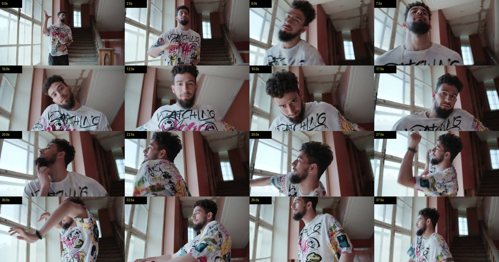
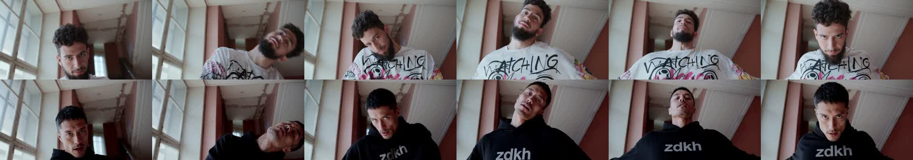

Same take. A different person.
I built a pipeline that puts a new person into an existing video. One character sheet sets the face, hair and clothes, and the performance, camera move, room and soundtrack stay as shot. It cuts the take into pieces of about five seconds, generates each one with MiniMax H3 on a rented GPU, checks its timing against the source and joins the pieces back into one shot.
Before and after
A 19-second stock clip in four chained pieces. Drag the line, or focus it and use the arrow keys. Both halves play from one video file, so they can't drift apart.
Source: the first 19 s of Pexels stock video 10265181, resampled from 25 to 24 fps. Result: 1920 × 1024 at 24 fps. The stock clip has no sound.
More results
Two more full runs, each as a before and after video. One plays at a time.
Breakdance, 17.8 s
Spins, a handstand and floor work, from Pexels stock video 9344627. Four chained pieces on an NVIDIA A6000. Every piece measured speed 1.000 with at most 2 frames of lag, and the sound matched the source.
What breaks: at about 7 s the face turns to the camera for a moment where the dancer shows the back of his head. The grade marks it as a fail, and I haven't rerun it.
The full 39-second take
The whole clip from the before and after above, run from the Swap page with a second, more detailed character sheet. Eight chained pieces on an NVIDIA A6000, at speed 1.000 to 1.012 with at most 3 frames of lag.
What breaks: in piece 6 one head turn shows more face than the source does. I kept that piece at a 69 warning. The clip has no sound.
How it works


- Read the take. The server measures the clip, looks for hard cuts and lays the timeline out as a frame mosaic.
- Cut it into pieces of about five seconds, never across a hard cut. Pieces from one continuous shot are chained.
- Write one prompt per piece. The character description comes from the sheet and is the same, word for word, in every piece.
- Generate each piece with MiniMax H3 on a rented GPU. A chained piece is guided by the last 22 frames of the piece before it, which carries the face, clothes and light across the join.
- Check every piece by machine: frame count, plus speed and lag against the source, matched every half second, and the sound against the source's when the clip has any. Each join is scored by how closely its two frames match. A piece that fails is rerun with one change before the next one is built on it.
- Join and retime. The pieces go back together at the source's length with its soundtrack, next to a side-by-side compare.
What the runs measured
From each run's log and check report. First the 19-second before and after, on one NVIDIA L40S GPU, 12 November 2026.
The check report
| Piece | GPU time | Speed | Max lag | Join PSNR | Verdict |
|---|---|---|---|---|---|
| Piece 1 | 675 s | 1.000 | 1 frame | first piece | OK |
| Piece 2 | 645 s | 1.062 | 9 frames | 18.8 dB | Speed off |
| Piece 2, rerun | 1,240 s | 1.017 | 6 frames | not logged | OK |
| Piece 3 | 643 s | 1.042 | 7 frames | 19.8 dB | OK |
| Piece 4 | 1,931 s | 1.033 | 7 frames | 21.2 dB | OK |
Limits: speed 0.95 to 1.05; lag up to 7 frames is OK, 8 to 15 is a warning.
What the checks caught
The first assembly ran fast. The chained pieces played at 1.03 to 1.06 times the source speed, and each join froze for 7 or 8 frames. The workflow fed each chained piece 22 frames of context but started its motion reference at the piece's own first frame, so the two were out of step. I patched it to start the reference 22 frames early, and a test on the same GPU then measured speed 1.000 and no frozen frames. For this take I reran piece 2 with a new seed and retimed the pieces by hand. The before and after above is that retimed take. Both later runs used the patched workflow.
The two later runs
| Run | GPU | Pieces | First piece | Each chained piece | Speed | Max lag |
|---|---|---|---|---|---|---|
| Breakdance, 17.8 s | A6000 | 4 × 4.4 s | 794 s | 1,436 to 1,448 s | 1.000 | 2 frames |
| The 39-second take | A6000 | 8 × 4.9 s | 1,020 s | 1,428 to 1,453 s | 1.000 to 1.012 | 3 frames |
A chained piece takes longer than the first because it also carries the frames of the piece before it: about 140k tokens against 98k on the Breakdance run. Breakdance's third piece logged 2,804 s because a dropped connection held it; its generation took 1,436 s.
Cost, from the Swap page job
The Swap page
The same pipeline runs from a page in my creative toolkit, with no terminal. Each piece waits for my decision before the next one starts.


Character and motion scores are Claude's grades against a fixed rubric. Only timing is measured.
What it can't do yet
Spins and turns away from the camera
In the breakdance run a head turns the wrong way for about 0.4 s. In the 39-second take, one turn shows more face than the source. Both are in More results, unfixed.
Small figures and crowds
People smaller than about a third of the frame height, crowds, and footage with watermarks: I've avoided them so far.
More than one person
The code sends one sheet per person, but no multi-person job has run on a GPU yet.
Busy pieces
Three or more action beats in one piece get time-compressed, and a walk-in from outside the frame can turn into a hard cut. Shorter pieces help.
Speed
A 4.75-second piece takes about 11 minutes on an L40S, and a chained piece about 24 minutes on an A6000. Chained pieces have to run one after another.
Products
The swap model is trained on people. Swapping a product someone holds is a separate path I haven't proven.
Client work is under NDA. I can walk you through it in an interview.
This is a personal study, not client or commercial work. The new person is AI-generated, and the source clips are Pexels stock videos 10265181 and 9344627. Music in the run video: "Cat Walk" by Arulo (Mixkit).
Built with AI coding assistants.